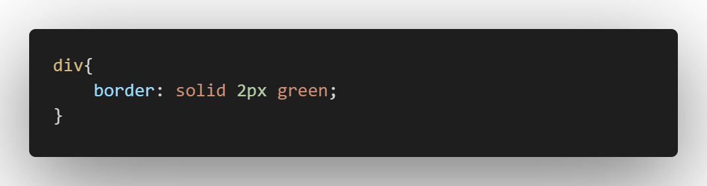
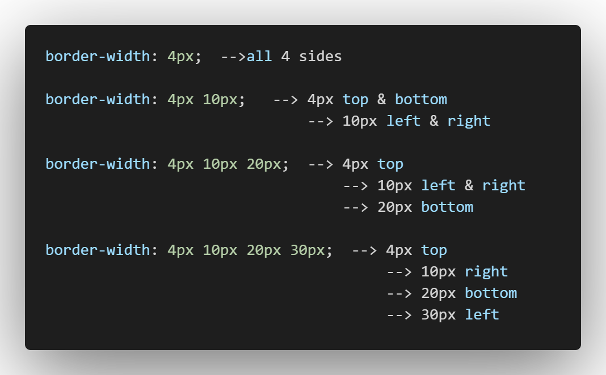
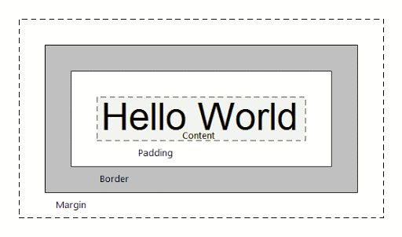

-> The height & width of any inline element will be the content itself.
-> elements which are not inline can take width & height properties.
BORDER
-> any element can have a border around it.
-> border property specifies style, width, & color.
-> width & color are 1px & black by default and style must be specified.

BORDER-STYLE:
- none, dotted, dashed, solid, double, groove, ridge, inset, outset, hidden

MARGIN
-> additional space outside the border.
-> space b/w the element & it's neighbour.
-> +ve margin, -ve margin.
PADDING
-> space between an element and it's border.
-> +ve padding, -ve padding.
--> Margin & padding doesn't take any color values.
--> Padding is color of element.
--> Margin has color of parent(mostly body)

Actual Width of an element:
-> L&R margins + L&R Borders + L&R Paddings + Width
Actual Height of an element:
-> T&B margins + T&B Borders + T&B Paddings + Height
BOX-SIZING
-> content-box => default additive.
-> border-box => width takes content, padding, & border into consideration.
(ie., if we want width to be 200px, it makes 200px - padding - border)